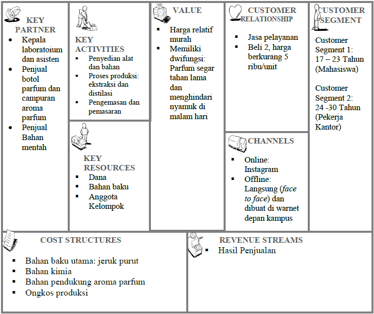

Produk fermentasi kopi ini merupakan produk yang mengandung alkohol. Oleh karena itu, masyarakat yang dapat mengonsumsinya ialah seluruh lapisan masyarakat dengan batas usia di atas 17 tahun. Pada awal penghasilan produk, penjualan utama akan ditargetkan kepada masyarakat di sekitar kawasan Danau Toba, terutama pada Kabupaten Toba Samosir, Humbang Hasundutan, Tapanuli Utara, dan Simalungun. Hal ini dilakukan guna memperkenalkan produk kopi hasil fermentasi sebagai produk yang nikmat dan dapat dikonsumsi laiknya kopi dengan cita rasa yang lebih dari kopi biasanya. Jika masyarakat memberikan respon yang positif, maka jumlah dari produk akan ditingkatkan dan target penjualan akan diluaskan yakni Sumatera Utara. Jika hasilnya juga positif, maka daerah pemasaran akan diluaskan lagi ke luar sumatera. .
Dampak positif dari aspek sosial yang didapat dari pengembangan hasil inovasi teknologi ini adalah masyarakat dapat menikmati cita rasa kopi yang baru. Dimana, rasa dari kopi ini merupakan perpaduan dari rasa kopi dan alkohol sehingga masyarakat yang mengkonsumsinya tidak merasa bosan dengan rasa kopi yang biasa. Bukan hanya menikmati rasa yang berbeda, khasiat dari kopi itu sendiri juga akan tetap sama. Selain itu, dampak positif dari aspek ekonominya adalah para produsen bubuk kopi dapat meningkatkan nilai jual dari kopi robusta sehingga menambah pendapatan mereka.

Gambar 2 Analisis Model Canvas
Deskripsi
Kopi fermentasi memiliki target dan segmentasi yang jelas yakni usia di atas 17 tahun. Hal ini diakibatkan produk kopi fermentasi ini mengandung alkohol yang tidak dapat sembarangan dikonsumsi oleh masyarakat di bawah umur 17 tahun. Masyarakat yang menjadi target utama dari produk ini adalah wisatawan yang sedang berwisata ke daerah Danau Toba yang menikmati keindahan tempat wisata pada malam hari. Hal ini sangat mendukung karena produk kopi fermentasi ini memiliki kandungan alkohol yang dapat menghangatkan badan. Sehingga dapat menikmati keindahan tempat wisata ketika cuaca dingin. Begitu juga dengan masyarakat yang sedang melakukan kemah di daerah Sumatera Utara dapat menjadi sasaran produk kopi fermentasi ini. Bukan hanya itu saja, produk ini dapat dipasarkan pada masyarakat sekitar yang suka menikmati kopi dan alkohol pada malam hari. Hal ini diakibatkan, banyaknya masyarakat Sumatera Utara terkhusus kaum pria yang menghabiskan waktu di tempat-tempat penjualan minuman beralkohol pada malam hari.
Nilai yang membuat produk ini berbeda dari produk yang lain adalah ukuran kemasannnya yang mudah di bawa kemana-mana, dengan sekali minum sudah mendapatkan dua rasa sekaligus yakni rasa kopi dan rasa alkohol, dan setelah meminum akan merasa segar dan hangat.
Secara online, produk fermentasi kopi ini melakukan promosi dengan media sosial seperi Instagram, Facebook, Line, dan WA. Sedangkan secara offline, produk fermentasi kopi ini akan menitipkannya di tempat-tempat wisata di sekitaran Sumatera Utara, di warung sekitaran perumahan masyarakat, dll.
Pemilik produk fermentasi kopi akan sering melakukan komunikasi dengan customer atau calon pembeli melalui instagram, nomor telepon, WA, facebook, Line, ataupun secara langsung dan akan menanyakan feedback dari pembeli untuk proses pengembangan dan proses kepuasan pelanggan akan produk fermentasi kopi. Hal ini untuk menjaga kepercayaan pembeli, sehingga pembeli mau memesan kembali produk.